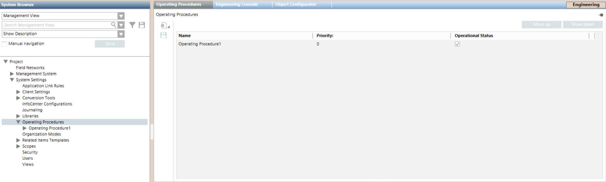

Main Operating Procedures Folder Workspace
Operating procedures are located under System Settings > Operating Procedures in the Management View of System Browser. They may be further organized into subfolders under the main Operating Procedures folder.
In Engineering mode, when you select the main Operating Procedures folder, the list of all the operating procedures configured in the system displays, included those located in any of its subfolders. (To see only the operating procedures of a specific folder, select that folder.)

When you configure operating procedures, the procedures list lets you modify the Priority of each procedure and its Operational Status (whether it is enabled or disabled). For details about these fields, see General Settings of an Operating Procedure and Properties and Commands of Operating Procedures and Steps.